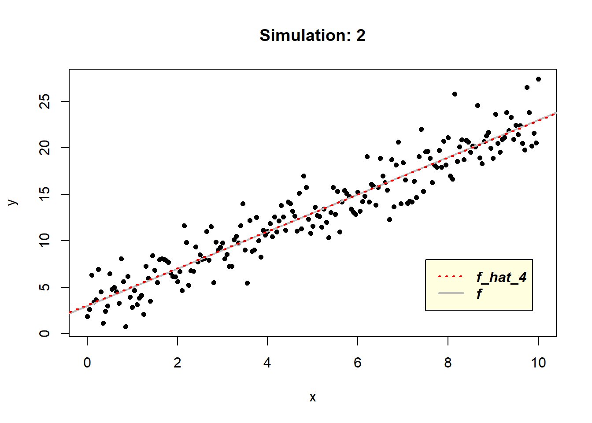

Demonstration: A more in-depth consideration of model accuracy
This demonstration was developed by Dr. Tatjana Kecojevic, Lecturer in Social Statistics.
So we discussed earlier that statistical modeling allows us to explain and dig deeper into understanding the nature of a process of a phenomenon of interest and that we can mathematically describe this phenomenon as an unknown function \(f\). In its related data, we annotate the information that can explain the problem’s behaviour as \(x\) (this could be a single value or a vector or matrix of values or something more complex) and the results of its behaviour as \(y\) (this could also be a single value or something more complex).
Mathematically we present this as:
\[y_i = f(x_i)\]
And of course, let’s not forget about the variation of the \(f\)’s behaviour:
\[y_i = f(x_i) + \epsilon_i\]
The standard approach for the error/noise is to adopt the following distribution structure \(\epsilon \sim N(0,\sigma)\), meaning that the \(\epsilon\) value is considered to be normally distributed with a mean of \(0\) and standard deviation \(\sigma\). Remember that this implies that the negative and positive impacts from the noise are considered equally likely, and that small errors are much more likely than extreme ones.
To evaluate the performance of a statistical model on a given data set, we “observe” the discrepancies between the predicted response values for given observations obtained by the chosen statistical model (\(\hat{f}(x_i)\)) and the true response values for these observations (\(y_i\)). As I already mentioned, the most commonly used performance measure for regression problems is the mean squared error (MSE):
\[MSE = \frac{1}{n} \sum^{n}_{i=1}(y_i - \hat{f}(x_i))^2\]
The MSE above is computed using the training data, used to fit the model, and as such it would be more correct to refer to it as the training MSE.
But we have already discussed that we are not really interested how well the model “works” on the training data, ie. \(\hat{f}(x_i) \approx y_i\). We are more interested in the accuracy of the predictions \(\hat{f}(x_0)\) that are obtained when we apply the model to previously unseen test data \((x_0, y_0)\), ie. \(\hat{f}(x_0) \approx y_0\).
In other words, we want to chose the model with the lowest \(test\) \(MSE\) and to do so we need a large enough number of observations in the test data to calculate the mean square prediction error for the test observations (\(x_0\), \(y_0\)), to which we can refer to as the \(test\) \(MSE\).
\[mean(y_0 - \hat{f}(x_0))^2\]
In statistics nothing is black and white. In other words, nothing is straightforward and there are many considerations one needs to take into account when applying statistical modelling. The same applies in this situation. We need to realise that when a given model yields a small training MSE but a large test MSE, we are said to be overfitting the data. The statistical model is too ‘preoccupied’ to find patterns in the training data and consequently is modelling the patterns that are caused by random effects, rather than by true features of the unknown function \(f\). When the model overfits the training data, the test MSE will be large because the modelled features that the model identifies in the training data just do not exist in the test data. Saying that, regardless of overfitting occurring or not, we expect the training MSE to be smaller than the test MSE, as most of the statistical models either directly or indirectly seek to minimise the training MSE. We need to be aware that the chosen model needs to be flexible and not rigid and glued to the training data.
MSE is simple to calculate and yet, despite its simplicity, it can provide us with a vital insight into modelling. It consists of two intrinsic components that can provide greater enlightenment about how the model works:
variance: degree to which \(\hat{f}\) would differ if we estimated it using a different training dataset (ideally, it should not vary greatly).
bias: average difference between the estimator \(\hat{y}\) and true value \(y\). Mathematically we write bias as:
\[E[\hat{y} – y]\]
As it is not squared difference, it can be either positive or negative. Positive or negative bias implies that the model is over or under “predicting”, while the value of zero would indicate that the model is likely to predict too much as it is to predict too little. The latter implies that the model can be completely wrong in its prediction and still provide us with the bias of zero. This implies that bias on its own provides little information about how correct the model is in its prediction.
Remember that \(y = f(x) + \epsilon\) and therefore \(\hat{f}\) is not directly approximating \(f\). \(\hat{f}\) models \(y\) that includes the noise. It can be challenging and in some cases even impossible to meaningfully capture the behaviour of \(f\) itself when the noise term is very large. We have discussed earlier that we assess model accuracy using MSE which is calculated by:
- obtaining the error (i.e. discrepancy between \(\hat{f}(x_i)\) and \(y_i\))
- squaring this value (making negative into the positive same, and greater error gets more severe penalty)
- then averaging these results
The mean of the squared error is the same as the expectation\(^*\) of our squared error so we can go ahead and simplify this a slightly:
\[MSE=E[(y-\hat{f}(x))^2]\]
Now, we can break this further and write it as:
\[MSE = E[(f(x)+ \epsilon - \hat{f}(x))^2]\]
Knowing that computing the expectation of adding two random variables is the same as computing the expectation of each random variable and then adding them up:
\[E[X+Y]=E[X] +E[Y]\]
and recalling that \(\sigma^2\) represent the variance of \(\epsilon\), where the variance is calculated as:
\[E[X^2]-E[X]^2,\]
and therefore:
\[Var(\epsilon) = \sigma^2 = E[\epsilon^2] - E[\epsilon]^2,\]
with \(\epsilon \sim N(0,\sigma)\)
\[E[\epsilon]^2=\mu^2=0^2=0\] we get:
\[E[\epsilon^2] = \sigma^2\]
This helps us to rearranging MSE further and calculate it as:
\[MSE=σ^2+E[−2f(x)\hat{f}(x)+f(x)^2+\hat{f}(x)^2]\]
where \(\sigma^2\) is the variance of the noise (i.e. \(\epsilon\)). Therefore, the variance of the noise in data is an irreducible part of the MSE. Regardless of how good the model is, it can never reduce the MSE to being less than the variance related to the noise (i.e. error). This error represents the lack of information in data used to adequately explain everything that can be known about the phenomena being modelled. We should not look at it as a nuisance, as it can often guide us to further explore the problem and look into other factors that might be related to it.
Knowing that: \[Var(X) = E[X^2] - E[X]^2\]
we can apply further transformation and break MSE into:
\[MSE = \sigma^{2}+Var[f(x)-\hat{f}(x)]+E[f(x)-\hat{f}(x)]^2\]
The term \(Var[f(x)-\hat{f}(x)]\) is the variance in the model predictions from the true output values and the last term \(E[f(x)-\hat{f}(x)]^2\) is just the bias squared. We mentioned earlier that that unlike variance, bias can be positive or negative, so we square this value in order to make sure it is always positive.
With this in mind, we realise that MSE consists of:
- model variance
- model bias and
- irreducible error
\[\text{Mean Squared Error}=\text{Model Variance} + \text{Model Bias}^2 + \text{Irreducible Error}\]
We come to the conclusion that in order to minimise the expected test error, we need to select a statistical model that simultaneously achieves low variance and low bias.
Note that in practice we will never know what the variance \(\sigma^2\) of the error \(\epsilon\) is, and therefore we will not be able to determine the variance and the bias of the model. However, since \(\sigma^2\) is constant, we have to decrease either bias or variance to improve the model.
Testing the model using the test data and observing its bias and variance can help us address some important issues, allowing us to reason with the model. If the model fails to find the \(f\) in data and is systematically over or under predicting, this will indicate underfitting and it will be reflected through high bias. However, high variance when working with test data indicates the issue of overfitting. What happens is that the model has learnt the training data really well and is too close to the data, so much so that it starts to mistake the \(f(x) + \epsilon\) for true \(f(x)\).
The Simulation
To better understand these concepts, let us run a small simulation study. We will:
- simulate a function \(f\)
- apply the error, i.e. noise sampled from a distribution with a known variance
To make it very simple and illustrative we will use a linear function \(f(x) = 3 + 2x\) to simulate response \(y\) with the error \(e\thicksim N(\mu =0, \sigma^2 =4)\), where \(x\) is going to be a sequence of numbers between \(0\) and \(10\) in steps of \(0.1\). We will examine the simulations for the models that over and under estimate the true \(f\), and since it is a linear function we will not have a problem identifying using simple linear regression modelling.
Let’s start with a simulation in which we will model the true function with \(\hat{f}_{1} = 4 + 2x\) and \(\hat{f}_{2} = 1 + 2x\).
set.seed(123) ## set the seed of R‘s random number generator
# simulate function f(x) = 3 + 2x
f <- function(x){
3 + 2 * x
}
# generate vector X
x <- seq(0, 10, by = 0.05)
# the error term coming from N(mean = 0, variance = 4)
e <- rnorm(length(x), mean = 0, sd = 2)
# simulate the response vector Y
y <- f(x) + e
# plot the simulated data
plot(x, y, cex = 0.75, pch = 16, main = "Simulation: 1")
abline(3, 2, col ="gray", lwd = 2, lty = 1)
# model fitted to simulated data
f_hat_1<- function(x){
4 + 2 * x
}
f_hat_2 <- function(x){
1 + 2 * x
}
y_bar = mean(y) # average value of the response variable y
f_hat_3 <- function(x){
y_bar
}
# add the line representing the fitted model
abline(1, 2, col = "red", lwd = 2, lty = 2)
abline(4, 2, col = "blue", lwd = 2, lty = 1)
abline(y_bar, 0, col = "darkgreen", lwd = 2, lty = 3)
legend(7.5, 10, legend=c("f_hat_1", "f_hat_2", "f_hat_3", "f"),
col = c("blue", "red", "darkgreen", "gray"),
lwd = c(2, 2, 2, 2), lty = c(1:3, 1),
text.font = 4, bg = 'lightyellow')
Observing the graph, we notice that \(\hat{f}_1\) and \(\hat{f}_2\), depicted in blue and red lines respectively, follow the data nicely, but are also systematically over (in the case of \(\hat{f}_1\) and under (in the case of \(\hat{f}_2\)) estimating the values. In the simple model \(\hat{f}_3\), the line represents the value \(\bar{y}\), which cuts the data in half.
As we mentioned earlier, knowing the true function \(f\) and the distribution of \(\epsilon\) we can calculate: - the MSE using the simulated data and the estimated model, - the model’s bias and variance which will allow for the calculation of the “theoretical” MSE. This will allow for more detailed illustration about the information contained in the model’s bias and variance.
# calculate MSE from data
MSE_data1 = mean((y - f_hat_1(x))^2)
MSE_data2 = mean((y - f_hat_2(x))^2)
MSE_data3 = mean((y - f_hat_3(x))^2)
# model bias
bias_1 = mean(f_hat_1(x) - f(x))
bias_2 = mean(f_hat_2(x) - f(x))
bias_3 = mean(f_hat_3(x) - f(x))
# model variance
var_1 = var(f(x) - f_hat_1(x))
var_2 = var(f(x) - f_hat_2(x))
var_3 = var(f(x) - f_hat_3(x))
# calculate 'theoretical' MSE
MSE_1 = bias_1^2 + var_1 + 2^2
MSE_2 = bias_2^2 + var_2 + 2^2
MSE_3 = bias_3^2 + var_3 + 2^2
for (i in 1:1){
cat (c("==============================================","\n"))
cat (c("=============== f_hat_1 ================","\n"))
cat(c("MSE_data1 = ", round(MSE_data1, 2), sep = '\n'))
cat(c("bias_1 = ", bias_1, sep = '\n' ))
cat(c("variance_1 = ", round(var_1, 2), sep = '\n' ))
cat(c("MSE_1 = 4 + bias_1^2 + variance_1 = ", MSE_1, sep = '\n' ))
cat(c("==============================================","\n"))
cat(c("=============== f_hat_2 ================","\n"))
cat(c("MSE_data2 = ", round(MSE_data2, 2), sep = '\n'))
cat(c("bias_2 = ", bias_2, sep = '\n' ))
cat(c("variance_2 = ", round(var_2, 2), sep = '\n' ))
cat(c("MSE_2 = 4 + bias_2^2 + variance_2 = ", MSE_2, sep = '\n' ))
cat(c("==============================================","\n"))
cat(c("=============== f_hat_3 ================","\n"))
cat(c("average y = ", round(y_bar, 2), sep = '\n'))
cat(c("MSE_data3 = ", round(MSE_data3, 2), sep = '\n'))
cat(c("bias_3 = ", round(bias_3, 2), sep = '\n' ))
cat(c("variance_3 = ", round(var_3, 2), sep = '\n' ))
cat(c("MSE_3 = 4 + bias_3^2 + variance_3 = ", round(MSE_3, 2), sep = '\n' ))
cat(c("==============================================","\n"))
}## ==============================================
## =============== f_hat_1 ================
## MSE_data1 = 4.61
## bias_1 = 1
## variance_1 = 0
## MSE_1 = 4 + bias_1^2 + variance_1 = 5
## ==============================================
## =============== f_hat_2 ================
## MSE_data2 = 7.64
## bias_2 = -2
## variance_2 = 0
## MSE_2 = 4 + bias_2^2 + variance_2 = 8
## ==============================================
## =============== f_hat_3 ================
## average y = 13
## MSE_data3 = 36.7
## bias_3 = 0
## variance_3 = 33.84
## MSE_3 = 4 + bias_3^2 + variance_3 = 37.84
## ==============================================\(\hat{f}_1\) has a positive bias because it is overestimating data points more often than it is underestimating, but as it does it so consistently in comparison to \(f\) that produces variance of zero. In contrast \(\hat{f}_2\) has a negative bias as it is underestimating simulated data, but nonetheless it also does it consistently, resulting in zero variance with \(f\).
Unlike in the previous two model estimates which follow the data points, \(\hat{f}_3\) predicts the mean value of data, resulting in no bias since it evenly underestimates and overestimates \(f(x)\). However, the variation in prediction between \(f\) and \(\hat{f}_3\) is obvious.
Given that the true function \(f\) is linear, by applying simple regression modelling, we should be able to estimate it easily in R using the \(lm()\) function.
# model fitted to simulated data
f_hat_4<- function(x){
lm(y~x)
}
# plot the simulated data
plot(x, y, cex = 0.75, pch = 16, main = "Simulation: 2")
abline(3, 2, col ="gray", lwd = 2, lty = 1)
# add the line representing the fitted model
abline(lm(y~x), col ="red", lwd = 2, lty = 3)
legend(7.5, 8, legend=c("f_hat_4", "f"),
col = c("red", "gray"),
lwd = c(2, 2), lty = c(3, 1),
text.font = 4, bg = 'lightyellow')
Since the true function \(f\) is a linear model it is not surprising that \(\hat{f}_4\) can learn it, resulting in zero values of the model’s bias and variance.
# calculate MSE from data
MSE_data4 = mean((y - predict(f_hat_4(x)))^2)
# model bias
bias_4 = mean(predict(f_hat_4(x)) - f(x))
# model variance
var_4 = var(f(x) - predict(f_hat_4(x)))
# calculate 'theoretical' MSE
MSE_4 = bias_4^2 + var_4 + 2^2
for (i in 1:1){
cat (c("==============================================","\n"))
cat (c("=============== f_hat_4 ================","\n"))
cat(c("MSE_data4 = ", round(MSE_data4, 2), sep = '\n'))
cat(c("bias_4 = ", round(bias_4, 2), sep = '\n' ))
cat(c("variance_4 = ", round(var_4, 2), sep = '\n' ))
cat(c("MSE_4 = 4 + bias_4^2 + variance_4 = ", round(MSE_4, 2), sep = '\n' ))
cat (c("==============================================","\n"))
}## ==============================================
## =============== f_hat_4 ================
## MSE_data4 = 3.62
## bias_4 = 0
## variance_4 = 0
## MSE_4 = 4 + bias_4^2 + variance_4 = 4
## ==============================================We realise that the \(MSE\) is more than just a simple error measurement. It is a tool that informs and educates the modeller about the performance of the model being used in the analysis of a problem. It is packed with information that when unwrapped can provide a greater insight into not just the fitted model, but the nature of the problem and its data.
\(^*\) The Expectation of a Random Variable is the sum of its values weighted by their probability. For example: What is the average toss of a fair six-sided die?
If the random variable is the top face of a tossed, fair six-sided die, then the probability of die landing on \(X\) is:
\[f(x) = \frac{1}{6}\] for \(x = 1, 2,... 6\). Therefore, the average toss, i.e. the expected value of \(X\) is:
\[E(X) = 1(\frac{1}{6}) + 2(\frac{1}{6}) + 3(\frac{1}{6}) + 4(\frac{1}{6}) + 5(\frac{1}{6}) + 6(\frac{1}{6}) = 3.5\] Of course, we do not expect to get a fraction when tossing a die, i.e. we do not expect the toss to be 3.5, but rather an integer number between 1 to 6. So, what the expected value is really saying is what is the expected average of a large number of tosses will be. If we toss a fair, six-side die hundreds of times and calculate the average of the tosses we will not get the exact 3.5 figure, but we will expect it to be close to 3.5. This is a theoretical average, not the exact one that is realised.